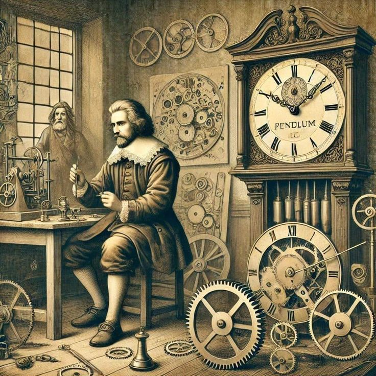
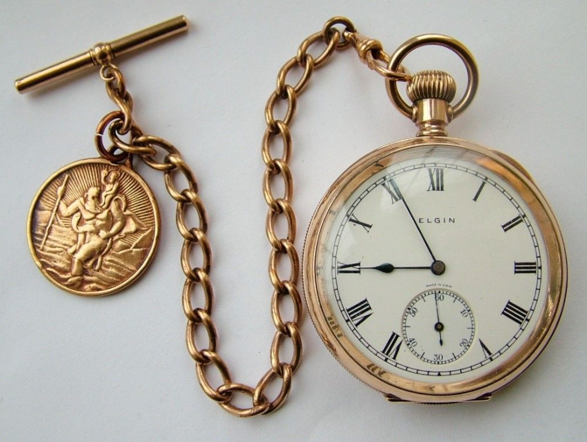
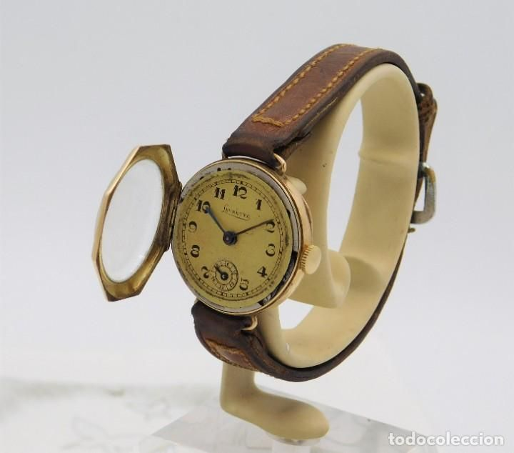
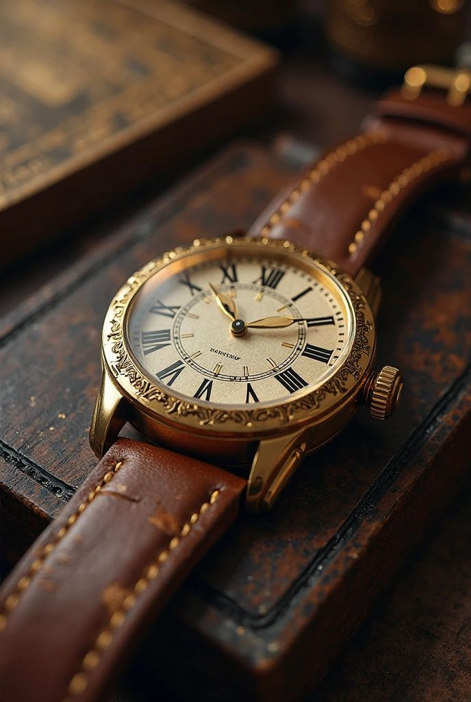
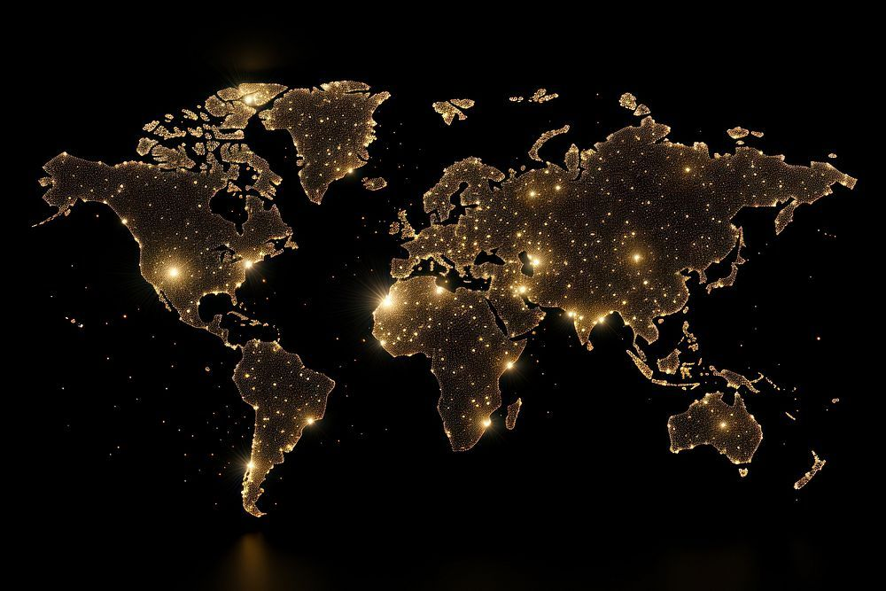
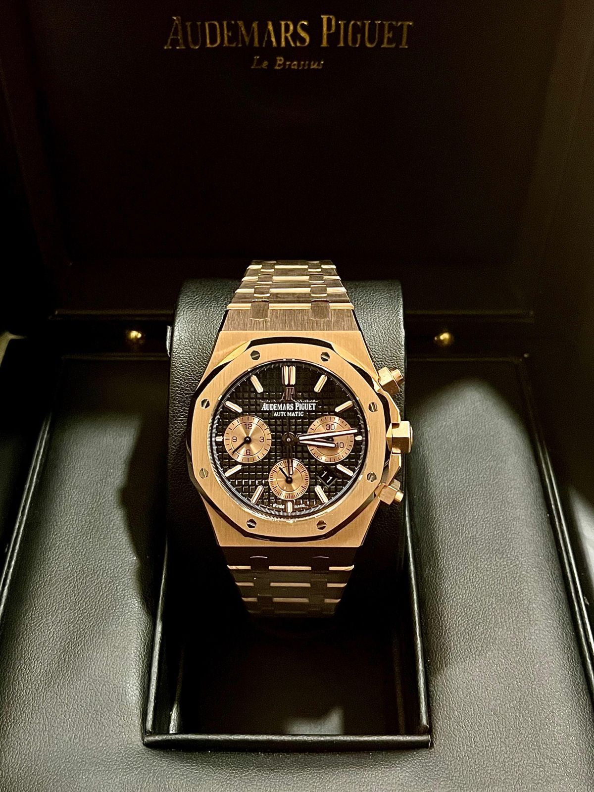
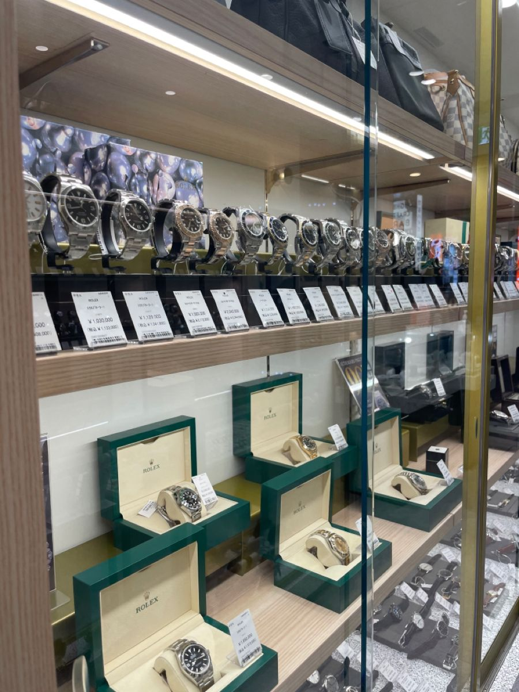

Galería de Momento
Explora los hitos más importantes en la historia de LuxTime









Línea del Tiempo
Conoce nuestra evolución a lo largo de los años
Fundación de LuxTime en Ginebra
Nacimiento de la marca en un taller artesanal suizo.
1970
Primer reloj con certificación cronómetro
La marca obtiene su primera certificación oficial de precisión.
1985
Ampliación de talleres
Se inaugura un nuevo espacio de producción en Suiza.
1990
Expansión internacional
LuxTime abre oficinas en Europa y América.
2000
Primer reloj inteligente
Lanzamiento de un modelo híbrido que combina tradición y tecnología.
2010
Colaboraciones de lujo
LuxTime se asocia con diseñadores de renombre mundial.
2015
Nueva sede central
Se inauguran modernas instalaciones en Ginebra.
2020
Más de 1 millón de relojes vendidos
Un hito histórico que consolida a LuxTime en el mundo.
2024